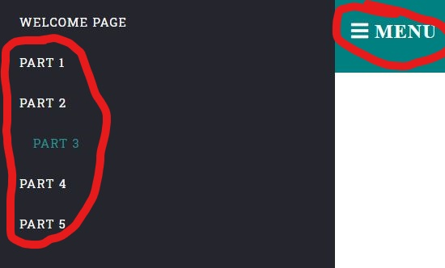

- Quizzes
- Quiz1
- Quiz2
- Quiz3
In this program, you will be introduced to some basic concepts about web development that are essential for every web developer to know.
Before we being, lets take a look at some helpful tips to allow us to naviagate through the program.
If at any point you wish to exit the program, you can do so by selecting the MENU button on the top navigation bar, where you will be able to select your desired content from the sidebar.
Each unit will cover various specific topics, and will include a quiz to test you knowledge.
The top navigation allows you to traverse through this program in any order you wish. At any point, you can review each unit, return to this tutorial, or if your ready take on the quizes!
While reading through the different units, you can use the previous and next buttons located at the bottom of the page to traverse through different pages in the unit. Try pressing the next button below to begin with Unit 1!
This concludes the tutorial! Good luck, and have fun!